How to Cut Ginger for Stir-Fries
Ginger can be cut for stir-fries in a number of ways. For a very mild ginger flavor, thick coin-shaped slices with the skin on can be used to infuse oil before adding your main ingredients. Ginger can be minced for ginger flavor that permeates a dish (such as Ginger Beef on here), or it can be cut into fine julienne and treated more like a vegetable than an aromatic for bursts of flavor (like in Gong Bao Ji Ding on here).
KNIFE SKILLS
SHOPPING AND STORAGE
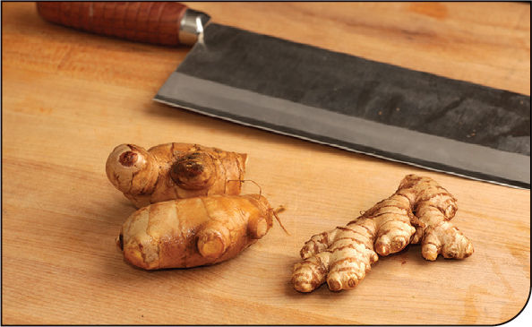
Ginger is the edible rhizome of a perennial flowering plant.* Young ginger has pale yellow, relatively smooth and thin skin. It has a milder flavor and juicier, smoother texture, which makes it ideal for julienne. Mature ginger has thicker, darker skin and a more fibrous texture with stronger flavor. In most Western supermarkets, all you’re going to find is mature ginger. This is OK. Most dishes will work just fine with older ginger. If you have access to a good Asian market, look for the younger stuff, which is usually sorted separately from the mature ginger.
When buying ginger, look for hands that are plump and smooth looking with a firm texture that doesn’t bend or yield under pressure. Avoid soft or wrinkly roots. For ease of cutting and better yield, I look for hands of ginger with larger sections and as few smaller branches as possible.
Mature ginger can be stored on the counter at room temperature for several days or even weeks. Young ginger should be stored in a partially sealed container or loosely closed plastic bag in the refrigerator.
As with garlic, I find the mortar and pestle to be the best tool for mincing and crushing ginger. For a finer puree to use in things like dressings and marinades, you might consider investing in a Japanese-style ginger grater, which comes in either ceramic or metal. It’s a small plate or paddle with tiny teeth for grinding and a well for collection. These graters can also be used for grating other vegetables like carrots (for Japanese Side Salad, here), garlic, daikon radish, wasabi or horseradish root, or onions. A rasp like a Microplane will also work for these purposes.
Unlike cut garlic, grated or chopped ginger can be stored for several days in a sealed container in the refrigerator.
TO PREPARE GINGER
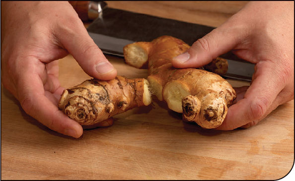
Separate the fingers: Break sections off the main hand of ginger with your hands. Break off only as much as you need to use for a given recipe.
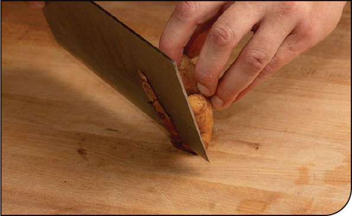
Peel: There are two easy ways to peel ginger. Neither involves a peeler. If you’re comfortable with a knife, you can peel ginger by cutting it crosswise to create a stable plane, then using the tip of your knife to cut downward and remove the peel in sections.
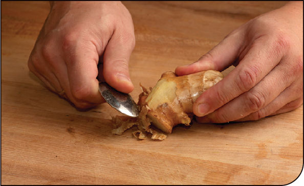
The easier but slightly more time-consuming way to peel ginger is with a regular soupspoon. Scrape the spoon against the skin and it should come right off, leaving the interior intact.
With either method I recommend saving the peels and placing them in a container with some soy sauce in the fridge. The ginger-flavored soy sauce is great for dressings, marinades, and sauces. You can continuously add fresh soy sauce and ginger to the container to keep it topped up and flavorful. (Discard old ginger occasionally if the container starts to get too full of ginger skins.)
FOR SLICES OR COINS
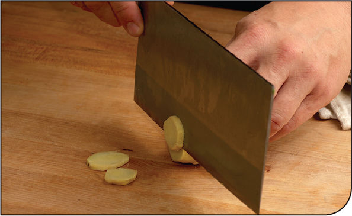
For slices you plan on using to flavor oil, simply cut the peeled ginger crosswise into coin-shaped disks about ¼ inch thick.
FOR MATCHSTICKS
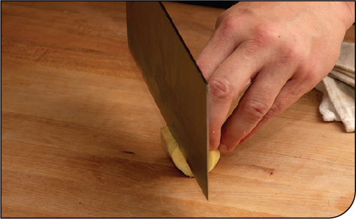
Start with a peeled 1½- to 2-inch section of ginger. Cut off one side of the section, cutting lengthwise to create a flat, stable surface for the ginger to rest on.
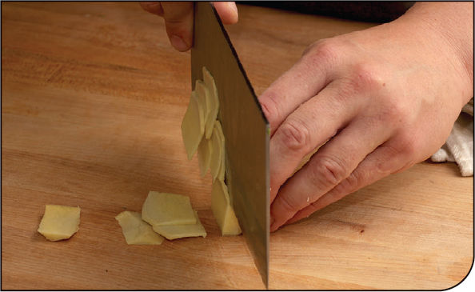
With the ginger resting on its newly cut surface, use a sharp chef’s knife to cut the ginger into planks that are 1⁄16 to ⅛ inch thick. Alternatively, use a Japanese-style mandoline to slice the ginger into 1⁄16- to ⅛-inch planks.
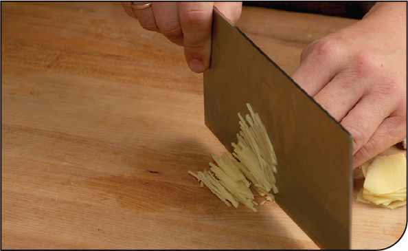
Stack a few of the planks together and slice them lengthwise with your chef’s knife to create fine matchsticks.
TO MINCE WITH A MORTAR AND PESTLE
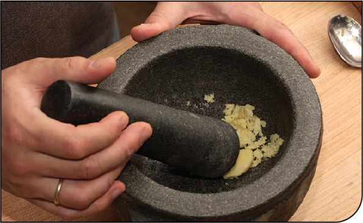
Peel and slice ginger across the grain into rough ⅛- to ¼-inch slices. Place them in the bowl of a mortar and pestle and crush to the desired consistency. Ginger and garlic can be crushed together in this fashion if a recipe calls for both of them to be added at the same time.
TO MINCE WITH A KNIFE
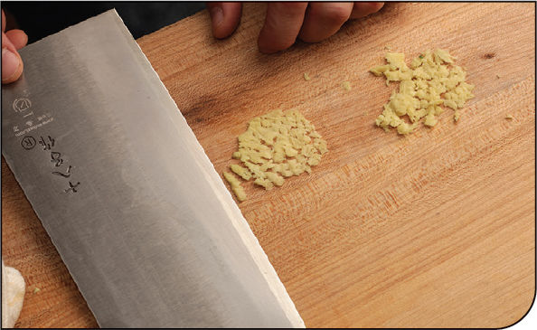
Cut the ginger into ¼-inch coins, then smash each one firmly with the side of a knife or a cleaver.
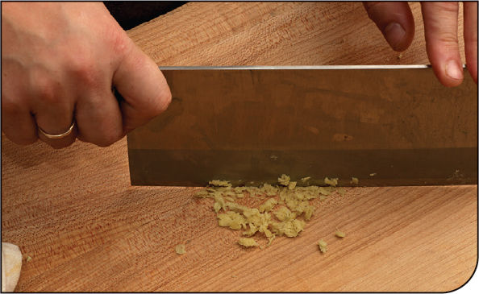
Rock your knife over the smashed ginger to reduce it to a mince.
*Although the edible portion of ginger is often called “ginger root,” it is in fact a rhizome: a modified underground plant stem from which roots shoot out downward and plant stems can shoot out upward. Tubers like potatoes are also not roots! They are, in fact, enlarged portions of rhizomes.